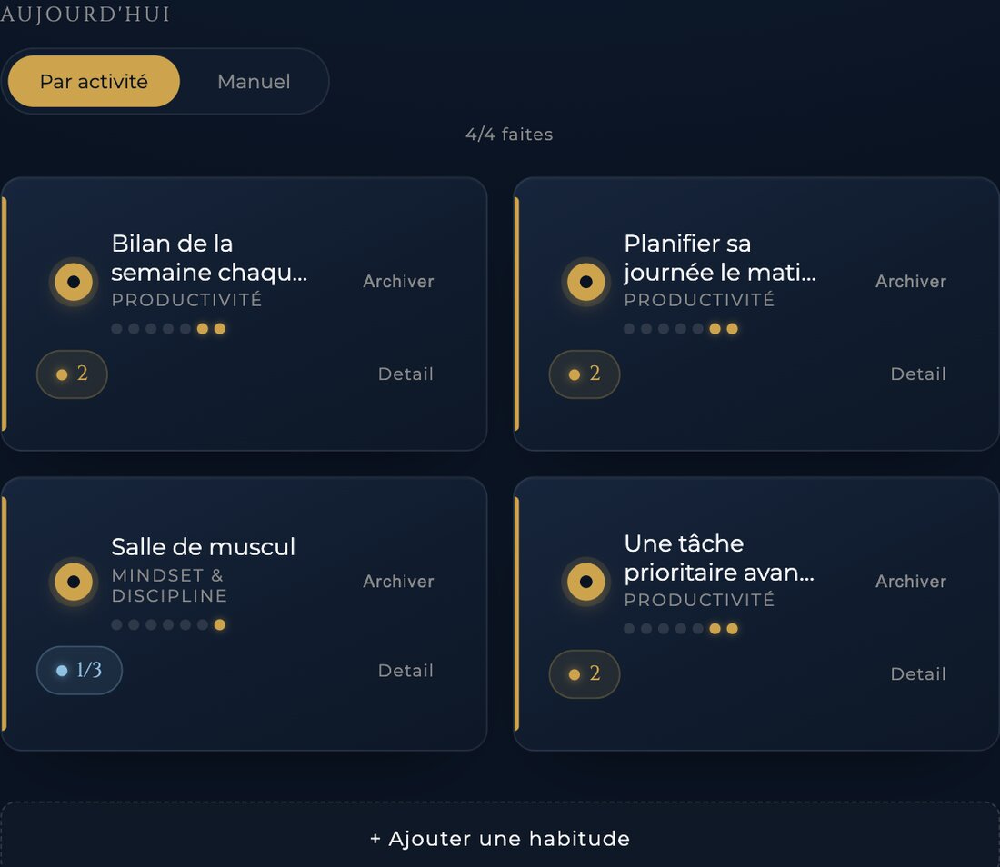
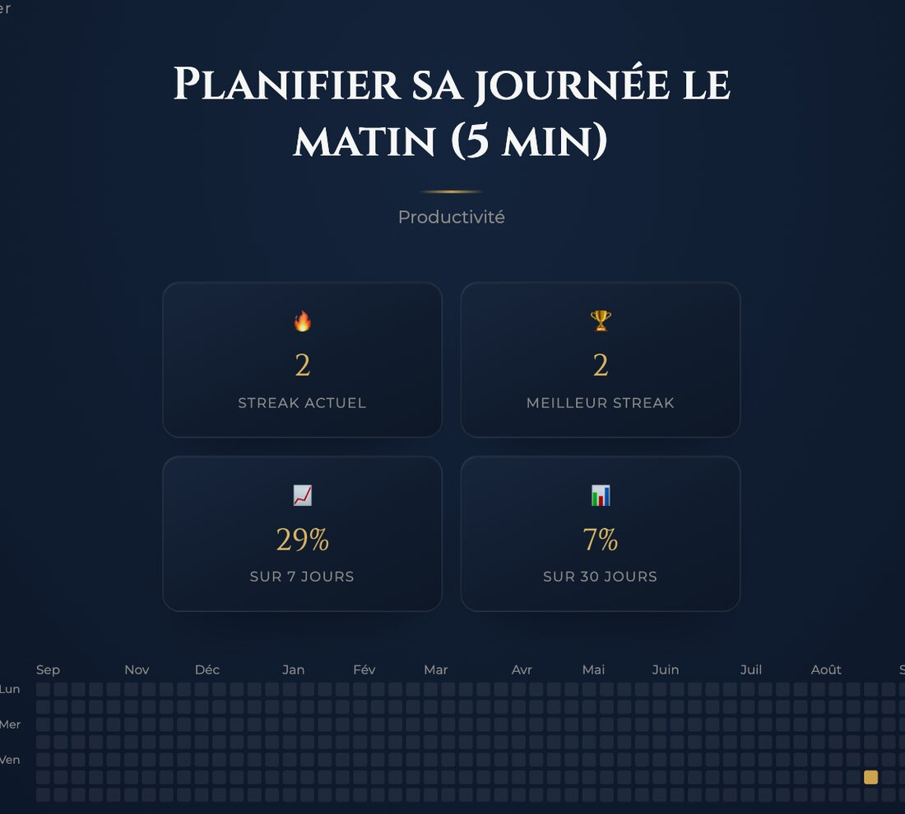
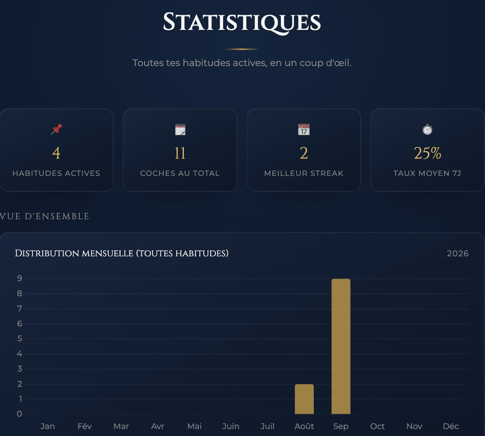

Un calendrier visuel pour chaque habitude qui compte. Suivi quotidien, séries, statistiques — sur tous tes appareils.
CommencerDevenir sa meilleure version · voir les fonctionnalités
Un jour manqué ? Plus jamais.



Le même tableau de bord, deux façons de suivre ce qui compte pour toi.
Habitude — une série à tenir chaque jour, ou X fois par semaine.
Tracker — un suivi simple, sans série à casser.
Un jour manqué — la série est cassée, la motivation avec.
Tu ne sais jamais si tu progresses vraiment, ou si tu tournes en rond.
Des apps chargées de fonctions inutiles, pour un prix élevé.
Tu notes tes objectifs dans un carnet, puis tu oublies de les relire.
Il te faut un seul endroit, pensé pour durer.
Une app puissante, à l'interface simple. Habitudes, séries, statistiques.
Commence à progresser en 3 étapes simples
Email, et tu es dans l'app. Aucune carte requise pour commencer.
Nom, type (habitude ou tracker), fréquence, couleur, description : tout se configure en quelques secondes. Jusqu'à trois gratuitement, illimité en Premium.
Séries, historique, statistiques : vois exactement où tu en es.
Pas de promesses. Pas d'excuses. Juste des habitudes.
L'excellence est un choix quotidien. Ce que tu fais aujourd'hui construit celui que tu seras demain. Chaque jour compte.
Pensé pour ceux qui veulent comprendre leur propre progression
Une seule app, pensée pour durer
Pas dix outils différents pour dix habitudes. Un seul endroit, clair et net.
Tes données t'appartiennent
Rien n'est revendu à des annonceurs. Ta progression, c'est ton affaire.
Simple par conception
Aucune fonctionnalité superflue, aucun menu confus.
Rapide et fiable
Ça s'ouvre, ça se coche, ça se ferme. Rien de plus à charger.
Le plan Free est gratuit, sans limite de durée, avec trois habitudes suivies. Aucune contrepartie cachée — si tu veux aller plus loin, Premium est à 4,99€/mois.
Oui, en passant Premium : plus aucune limite sur le nombre d'habitudes suivies.
Free : trois habitudes, historique 30 jours. Premium : habitudes illimitées, historique complet, statistiques détaillées et rappels personnalisés.
Ton streak actuel, ton meilleur streak et ton taux de complétion sont visibles à tout moment. En Premium, les statistiques détaillées vont plus loin.
Une habitude suit un streak — des jours consécutifs à tenir. Un tracker est un suivi simple, sans série à protéger : idéal pour ce que tu veux juste observer, sans pression.
Tu peux utiliser un freeze pour protéger ta série sans la casser — 1 par mois en Free, 4 en Premium. Tu peux aussi laisser une note sur chaque coche pour te souvenir du contexte.
Oui, à tout moment : un export CSV de toutes tes habitudes et coches est disponible en un clic depuis le tableau de bord.
IT BOY est une web app. Ouvre le site dans ton navigateur et choisis « Ajouter à l'écran d'accueil ». Elle fonctionne alors comme une app, même hors ligne.
Elles sont stockées sur des serveurs sécurisés, jamais revendues ni partagées. Tu peux supprimer ton compte à tout moment.
Oui, automatiquement. Coche sur ton téléphone, retrouve tout sur ton ordinateur.
Commence gratuitement, sans carte bancaire. Inscription en 30 secondes.
Commencer